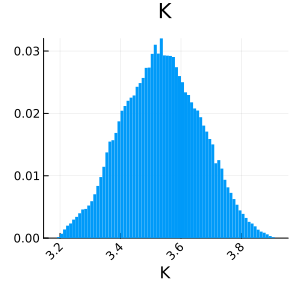
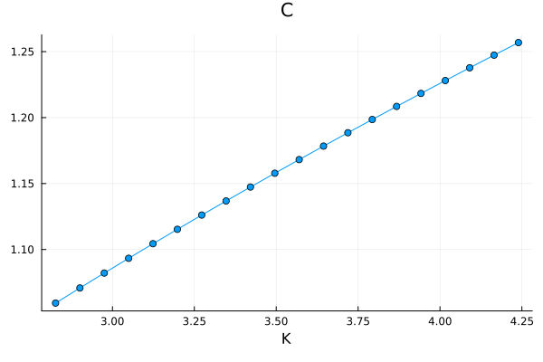
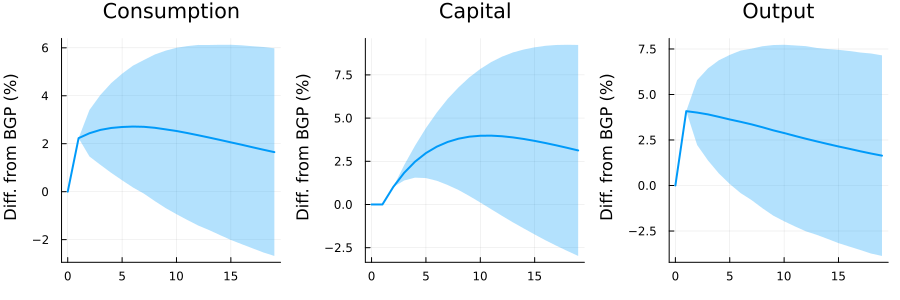
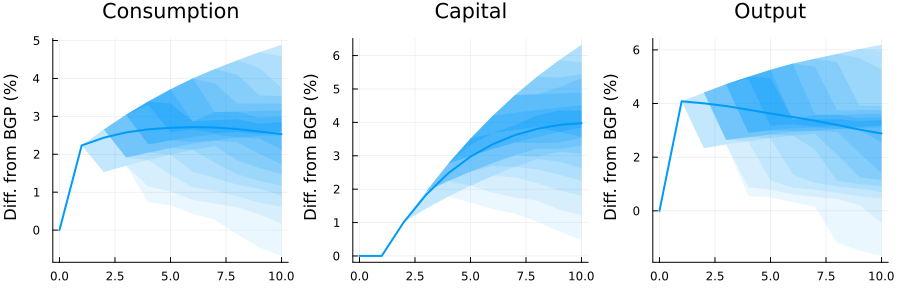
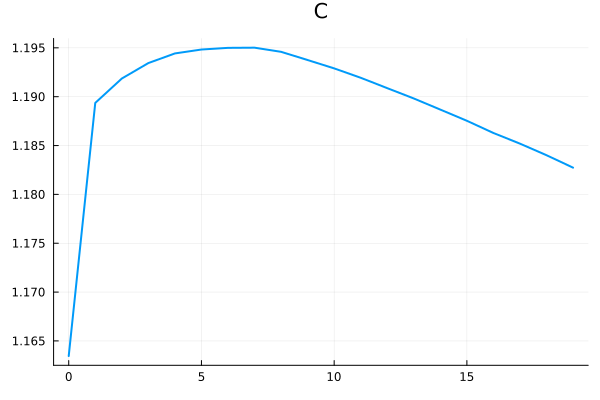

Simulation and Analysis
Use a solved model to study its simulated distribution, check equation errors, and trace responses to shocks. The examples continue with obj, stv, simseries and errs from the Quick Start. You can also obtain them by running examples/ngm.jl.
Stochastic simulation
simseries, errs = simulate(obj, stv)simseries contains the state variables and the simvars returned by your model, grouped into simulation runs. errs records the equation and transition errors at the same states; see Checking solution accuracy. Both can be read as Tables.jl tables.
Keyword arguments of simulate:
| Argument | Default | Description |
|---|---|---|
sz | 10_000 => 12 | Periods per run => number of runs |
burn | 500 | Burn-in periods discarded |
seed | 100 | RNG seed |
exog_start | steady-state index | Exogenous state in the first period |
endog_start | stv.endog | Endogenous state in the first period |
context_periods | dynamic_depth(model) | Extra history for variables computed from several periods; excluded from output |
report_bounds | true | Report the simulated range of each state against its grid |
If added variables need lags, context_periods supplies that history after the burn-in and before the reported sample. Set it to at least the longest lag to avoid initial NaN values; see augment_simulation in Implementing a Model.
The simulation records its solution, seed and other settings so you can identify how it was produced; see Tables and Provenance.
Computing moments
Call describe to summarize the simulated distribution. Its moments and stderrs each contain one table per sample; uncond is the unconditional sample:
out = describe(simseries)
out.moments.uncond((:C, :K, :Y), (:mean, :std, :ac))MomentArray (3 × 3):
┌───┬─────────┬───────────┬──────────┐
│ │ mean │ std │ ac │
├───┼─────────┼───────────┼──────────┤
│ C │ 1.16343 │ 0.028089 │ 0.979438 │
│ K │ 3.53626 │ 0.128192 │ 0.994765 │
│ Y │ 1.51708 │ 0.0447102 │ 0.955499 │
└───┴─────────┴───────────┴──────────┘
The statistics are :mean, :std, :minimum, :maximum, :ac (first-order autocorrelation), the percentiles :p5, :p25, :p50, :p75, :p95, and :cor_<state>_lag0, the correlation with each endogenous state. correlation_vars chooses the variables and lags of these correlations, as a vector of names (lag 0) or of name => lag pairs. additional_stats adds statistics as a NamedTuple of functions, each applied to one variable's series, for example additional_stats = (; maxabs = x -> maximum(abs, x)).
Conditional moments
To summarize particular states of the economy, define samples with filters. Each function selects periods to include. Here low_K keeps periods when capital is more than 3% below its deterministic steady state:
out = describe(simseries;
filters = (uncond = Returns(true),
low_K = x -> x.K < 0.97 * stv.endog.K))
out.moments.low_K((:C, :K, :Y), (:mean, :std))MomentArray (3 × 2):
┌───┬─────────┬───────────┐
│ │ mean │ std │
├───┼─────────┼───────────┤
│ C │ 1.12689 │ 0.0141568 │
│ K │ 3.36008 │ 0.0517214 │
│ Y │ 1.46382 │ 0.0264363 │
└───┴─────────┴───────────┘
With dropnan = true, every observation that contains a NaN is left out of all samples. A sample that selects no observations has NaN moments.
Reading a MomentArray
Rows are variables and columns statistics, both looked up by name:
stats = out.moments.uncond
stats(:C, :mean) # a number1.1634348575864497stats((:C, :K), :mean) # a NamedTuple of means(C = 1.1634348575864497, K = 3.5362597813796786)stats(:C, (:mean, :std)) # a NamedTuple of statistics of C(mean = 1.1634348575864497, std = 0.028089039833124472)stats((:C, :K), (:mean, :std)) # a MomentArray of the selected rows and columnsMomentArray (2 × 2):
┌───┬─────────┬──────────┐
│ │ mean │ std │
├───┼─────────┼──────────┤
│ C │ 1.16343 │ 0.028089 │
│ K │ 3.53626 │ 0.128192 │
└───┴─────────┴──────────┘
stats(Val((:C, :K)), Val((:mean,))) makes the same selection with the names fixed at compile time, which is faster inside a function. To tabulate moments across economies, see Moments and Comparing Economies.
Checking solution accuracy
errstats = calc_error_stats(errs)MomentArray (2 × 7):
┌─────┬────────────┬────────────┬────────────┬────────────┬────────────┬────────
│ │ mean │ p50 │ p75 │ p90 │ p95 │ ⋯
├─────┼────────────┼────────────┼────────────┼────────────┼────────────┼────────
│ fx1 │ 2.24207e-5 │ 2.17359e-5 │ 2.92063e-5 │ 3.98148e-5 │ 4.31738e-5 │ 5.487 ⋯
│ K │ 2.00285e-5 │ 2.2355e-5 │ 2.78156e-5 │ 2.99164e-5 │ 3.08177e-5 │ 3.226 ⋯
└─────┴────────────┴────────────┴────────────┴────────────┴────────────┴────────
2 columns omitted
Each row is an equilibrium condition or state transition. The columns report the mean and percentiles :p50, :p75, :p90, :p95, :p99 and :p100 (the maximum) of its absolute error. These measure how well the interpolated solution satisfies the model along the simulated paths.
Assess their size in the units of your residuals. If errors are large, check the solver's convergence and refine the grid where the simulation goes. The simulation-error plot below helps locate those states.
Impulse response functions
Use simulate_irf to compare paths under different shocks from the same starting state. It simulates many paths for each shock and reports their mean, standard deviation and any additional statistics you request:
irf = simulate_irf(obj, simseries; path_vars = (:C, :K, :Y))
propertynames(irf.means)(:uncond, :shock_1, :shock_2, :shock_4, :shock_5)The second argument is the starting endogenous state: a NamedTuple, or a SimulationPanel, whose mean is then used. Keyword arguments:
| Argument | Default | Description |
|---|---|---|
T | 20 | Length of each path, including the starting period |
N | 5_000 | Number of simulated paths per shock |
seed | 100 | RNG seed |
shocks | one per other exogenous state, plus uncond | NamedTuple of forced exogenous paths, e.g. (up = 5, up2 = [5, 5]) |
exog_start | steady-state index | Exogenous state in the starting period |
hold_periods | dynamic_depth(model) | Periods the exogenous state is held at exog_start before the starting period, to fill the variables of augment_simulation; not output |
path_vars | () | Variables whose individual paths are kept in irf.paths, needed for fan charts |
other_stats | (;) | Statistics besides the mean and standard deviation |
A shock specifies an exogenous state index or a vector of indices. The default uncond path draws states normally, without a forced shock. When supplying your own shocks, include it explicitly if you need a reference path: (uncond = Int[], up = 5).
Read paths by shock name and variable. Each has T elements, including the starting period; the forced shock begins in the second period:
irf.means.shock_5.C # mean path of C when the exogenous state moves to 5 in period 220-element Vector{Float64}:
1.1634518033888388
1.1893647273071646
1.191858716789869
1.193442704631533
1.1944277352563977
1.194828549082812
1.194998615374829
1.195017243061338
1.1945934232318471
1.1937525605707797
1.192897155002625
1.191936616849499
1.1908729702905054
1.1898178401964836
1.188678163596571
1.1875335303084178
1.186282604274445
1.1851925376759413
1.1840084371042299
1.1827343727653463irf.stdevs.shock_5.K # standard deviation of K across paths20-element Vector{Float64}:
4.441336254334961e-16
1.7765345017339846e-15
3.997202628901465e-15
0.007864149289795086
0.0163566566186308
0.025588312446357328
0.034921069184954585
0.04408709431271734
0.05254862821406254
0.06077377831808567
0.06834115026400013
0.07527385154334014
0.08146383255030556
0.08692683968455428
0.09156133172990184
0.09577210261585956
0.09952936517085331
0.10273253428832053
0.1055045757949537
0.1079704309732276The response to a shock is the shock path compared with uncond, the no-shock path from the same starting point. ImpulseMoment reads points of a response, and the plot recipes below draw it.
Plotting
Load Plots with using Plots, then pass a result to plot as shown below.
Simulated states
plot(simseries; maxpoints = 5_000)
This is a matrix of panels of the endogenous states, with a histogram of each state on the diagonal and scatter plots of pairs of states off the diagonal (the NGM has one state, K). Keyword arguments:
| keyword | default | meaning |
|---|---|---|
varnames | all endogenous states | variables to plot, in the order of rows and columns |
exst | all | keep only periods in this exogenous state |
maxpoints | nothing (all points) | randomly subsample scatter panels to at most this many points; histograms always use all data |
stategrid | nothing | an AbstractStateSpaceGrid, such as obj.ssg; draws thin grey lines at its nodes |
For long simulations set maxpoints: interactive backends such as plotly() slow down with many points.
Simulation errors
plot(errs, simseries; maxpoints = 2_000, stategrid = obj.ssg)
There is one row of panels per exogenous state and one column per error. With one endogenous state, each panel plots the error against that state. With two, each panel plots the two states against each other, colored by the absolute error. Keyword arguments:
| keyword | default | meaning |
|---|---|---|
errnames | all errors | tuple of error names to plot (the columns) |
exogstates | all values in simseries.exst | exogenous states to plot (the rows) |
endogstates | the first two endogenous states | one or two endogenous state names for the axes |
stategrid | nothing | an AbstractStateSpaceGrid; draws thin grey lines at its nodes |
maxpoints | nothing (all points) | randomly subsample each panel to at most this many points |
Policy and value functions
plot(obj.Vfct, :C, (; exst = 3))
This plots one output of an interpolant against the state variables not fixed by the third argument: a line for one free state, a filled contour for two. For a vector-valued output pass (:C, i) to plot element i. The keyword transform applies a function to the values.
Pfct stores the policy in the solver's unconstrained space: a variable with PositiveBounded() is stored as its logarithm. Plot such a policy with transform = exp:
plot(obj.Pfct, :C, (; exst = 3); transform = exp)Impulse responses
Choose the variables, labels and units for an impulse-response plot with ReportedVariable. Group them in an IRFPage to create a panel for each variable. A vector gives one row of panels; a matrix determines their row and column positions:
using TransitionFunctionIteration.Transformations: RatioPct
page = IRFPage([ReportedVariable(:C; label = "Consumption", transformation = RatioPct()),
ReportedVariable(:K; label = "Capital", transformation = RatioPct()),
ReportedVariable(:Y; label = "Output", transformation = RatioPct())])
plot(irf, page, :shock_5; sd = 2, size = (900, 300))
The third argument is a shock in irf.means. Each panel plots the variable's mean path under that shock against the periods 0:T-1, with the starting period as 0. The transformation compares it with a basis path, by default the first path in irf.means (uncond here); the basis keyword chooses another. Here RatioPct() gives the percentage response relative to the no-shock path, 100 (x / basis - 1), and sd = 2 shades two standard deviations of the paths around the mean.
Choose the transformation for what the plot should show:
| To plot | Transformation | Formula |
|---|---|---|
| the level of the path | Level() (the default) | x |
| the response in the units of the variable | DiffLevel() | x - basis |
| the percentage response | RatioPct() | 100 (x / basis - 1) |
| the response of a rate in percentage points | DiffPct() | 100 (x - basis) |
Pct() only multiplies the level by 100, for example to show a rate in percent; it is not a response. The transformations are in the Transformations submodule, which exports no names, so import the ones you use, as above, or write Transformations.RatioPct().
A fan chart shows the distribution of the individual paths. It needs the paths of every variable on the page, which simulate_irf keeps only for the variables in path_vars, as in the call above:
plot(irf, page, :shock_5; fan = true, tail_pct = 5, pers = 0:10, size = (900, 300))
To plot one variable, pass its name or a ReportedVariable instead of a page. A bare name plots the level of the mean path:
plot(irf, :C, :shock_5)
Keyword arguments, for a page and a single variable:
| keyword | default | meaning |
|---|---|---|
pers | 0:T-1 | periods to plot, counting the starting period as 0 |
basis | first key of irf.means | the path, a key of irf.means, used as the basis of the transformation (:uncond in this example) |
init | nothing | a variable whose first value is the init of DiffInitLevel and DiffInitPct; by default the first value of the plotted variable |
trend | nothing | a variable passed to the transformation as trend, for transformations of your own; the built-in ones ignore it |
sd | false | true or a multiplier m: shade m standard deviations around the mean |
fan | false | true or a number of bands: a fan chart of the paths in irf.paths instead of the sd ribbon |
n_bands | 10 | number of bands when fan = true |
tail_pct | 1.0 | percentile where the outermost band begins; bands are symmetric, so the default spans the 1st to the 99th percentile |
fan_alpha | 0.8 | opacity at the center of the fan |
legendon | false | page only: which panel shows the legend (false none, true the first, or a panel number) |
Each panel is titled with the variable's label, and its y-axis is labeled by the transformation.